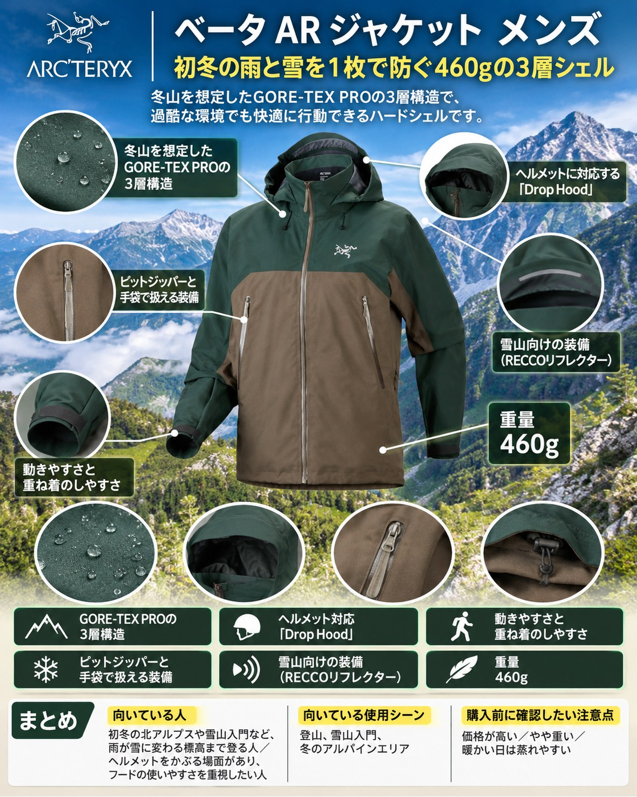

今週は9日（月）に冷たい雨が降り、標高の高い山では雪になる予報です。北アルプスの山小屋は営業を終え、稜線は冬山の季節に入りました。一方で近郊の低山は紅葉が見頃を迎え、街の気温は10〜20℃と寒暖差の大きい一週間になりそうです。雨が雪に変わる標高まで登るなら、雨具ではなく「冬にも使える防水シェル」が必要になります。今回紹介するのは、アークテリクスの「ベータ AR ジャケット メンズ」（モデル番号 X000011062）です。YAMA FITではこれまで、トレントシェル3Lやストームクルーザーなど、3シーズンの雨具を中心に紹介してきました。今回は「雨具と冬山向けハードシェルは何が違うのか」という視点で、この1着を見ていきます。初冬の高い山や雪山入門を考えている人、1着で雨と雪の両方に備えたい人に向いています。
基本スペック
※価格・仕様は2026年11月8日時点のアークテリクス公式オンラインストアの表示です。
| 項目 | 内容 |
|---|---|
| 商品名 | ベータ AR ジャケット メンズ |
| モデル番号 | X000011062 |
| 重量 | 460g |
| 素材 | 3層GORE-TEX PRO ePE（ナイロン100％、PFASフリーの耐久撥水加工） |
| フィット | レギュラー |
| 着丈（背中心） | 77cm（Mサイズ） |
| サイズ | XS〜XXL（カラーにより異なる） |
| 価格 | 110,000円（税込） |
冬山を想定したGORE-TEX PROの3層構造
寒い季節の登山やバックカントリースキーを想定したハードシェルです。素材はGORE-TEX PRO ePEで、肩まわり（ヨーク）と腕の上部には摩耗に強い生地を使い、胴体は軽い生地で重さとかさを抑えたハイブリッド構造です。使った人の声では、ほとんどの場面で濡れずに済み、風を伴う雨や湿った雪の中でも体を濡らさなかったとされ、防水性の高さが共通して評価されています（旧モデルの声も含みます。2026年版で膜がePEに変わっています）。
ヘルメットに対応する「Drop Hood」
フードはヘルメットの上からかぶれる「Drop Hood」で、調節用のコードロックがフードに内蔵されています。使った人の声では、襟とフードが分かれた作りで首が動かしやすいこと、手袋をしたまま調節できることが挙げられています。冷たい雨や雪の稜線で、顔まわりを守れる作りです。
動きやすさと重ね着のしやすさ
使った人の声では、腕を上げても裾がずり上がりにくく、動きやすさが高く評価されています。フィットにゆとりがあり、暖かい中間着を着込みやすいという声もあります。冬山でフリースや化繊インサレーションを重ねたい人には扱いやすいサイズ感です。
ピットジッパーと手袋で扱える装備
脇の下には長いピットジッパーがあり、使った人の声では霧雨の中の登りで役立ったとされています。袖口は手袋をしたままでも固定できるベルクロ式で、裾は調節できるヘムコード付きです。ジッパー付きのハンドポケットが2つ、内側に胸ポケットが1つあり、ハンドポケットは腰より上にあるので、ザックのヒップベルトを締めても使えるという声があります。
雪山向けの装備
フードのつばにはRECCOリフレクターが内蔵されています。また、PFASを添加せずに作られた素材で、bluesign認証やフェアトレードの表示もあります。
デメリット・注意点
- 価格が高い：税込110,000円で、価格の高さを短所に挙げる声があります。
- やや重い：重量は460gで、使った人の声でも「重めの部類」とされています。日帰りの低山で持ち歩くには負担に感じるかもしれません。
- 暖かい日は蒸れやすい：使った人の声では、気温が高いと通気性が落ちたとされています。紅葉の低山のように暖かい日の登りでは、ピットジッパーを開ける前提で使いましょう。
- ツーウェイのフロントジッパーがない：ハーネスを着ける登攀では不便だという声があります。
- 撥水の手入れが必要：新しいePE版は、こまめに撥水を戻す手入れが必要だという声があります（一部の意見）。
- 内ポケットが小さい：内側のポケットが小さいという声があります（一部の意見）。
- 長い雨でジッパーから水がしみることがある：長時間の降水のあと、ジッパー部分からわずかに水が入ったという声があります（軽微との評価で、一部の意見）。
向いている人・向いていない人
◎向いている人
- 初冬の北アルプスや雪山入門など、雨が雪に変わる標高まで登る人
- ヘルメットをかぶる場面があり、フードの使いやすさを重視したい人
- 1着の防水シェルで、雨の日と冬山の両方に備えたい人
△向いていない人
- 低山の日帰りが中心で、軽さと価格を優先したい人
- 暖かい雨の中を速いペースで登ることが多い人
- ハーネスを着けた登攀が多く、ツーウェイのフロントジッパーが欲しい人
まとめ
ベータ AR ジャケット メンズは、GORE-TEX PRO ePEの3層構造とヘルメット対応のフードで、冬山の雨と雪から体を守るハードシェルです。使った人の声では防水性と動きやすさが評価される一方、価格の高さ、重さ、暖かい日の蒸れやすさ、ツーウェイジッパーがない点は注意が必要です。3シーズンの雨具より一段上の守りが必要な山に行く人には、心強い1着です。週明けの冷たい雨と、雪の便りが届き始めた高い山に向けて、手持ちのシェルを見直してみてください。
この記事で紹介した商品
価格・重量・在庫は各ブランド公式サイトの記載（確認日つき）にもとづきます。商品を押すと、購入先を選べます。
この記事にはアフィリエイト広告が含まれます。リンク先での購入により、当サイトが報酬を受け取る場合があります。山行の前には、最新の気象とルートの状況を必ずご確認ください。